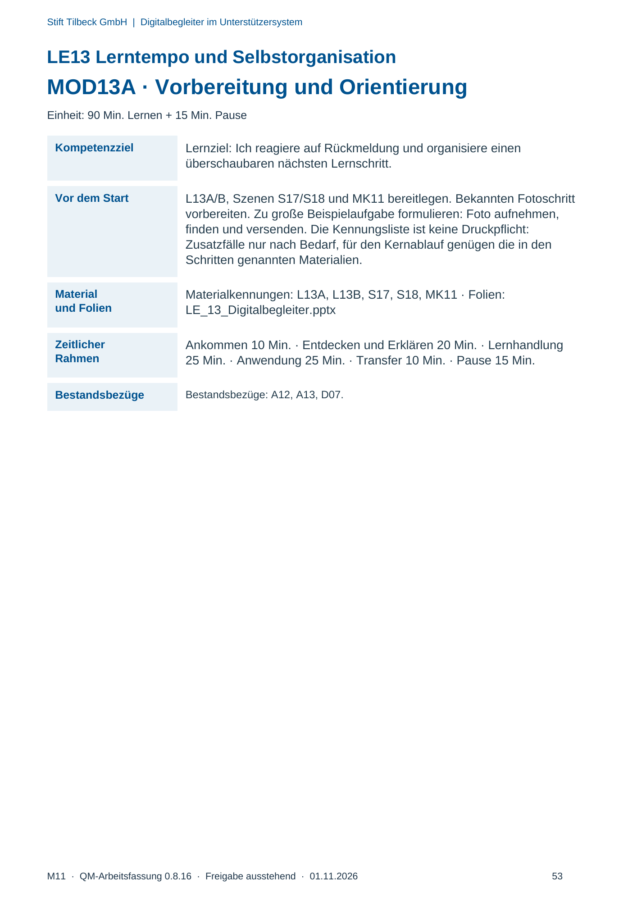
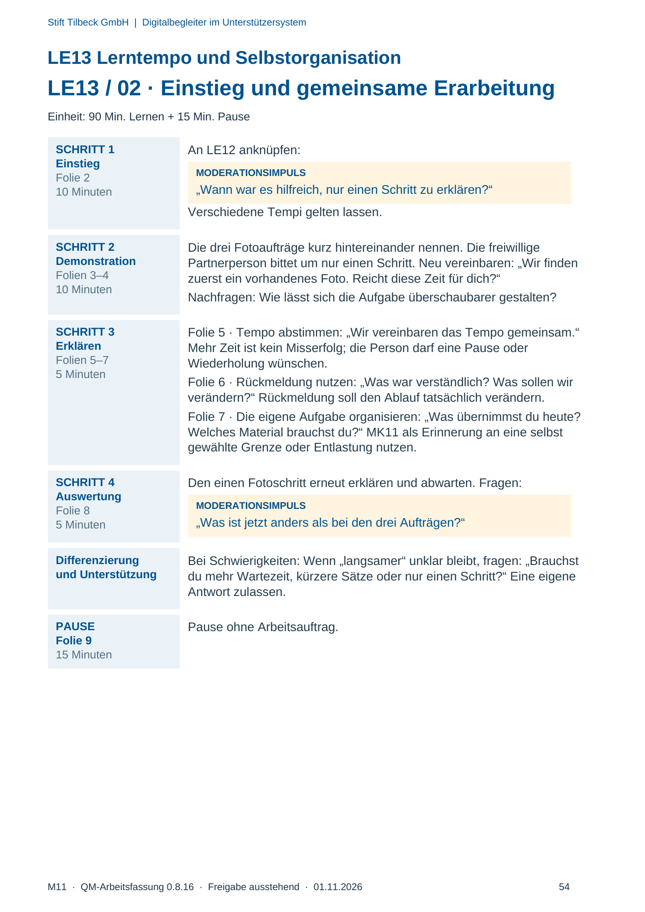
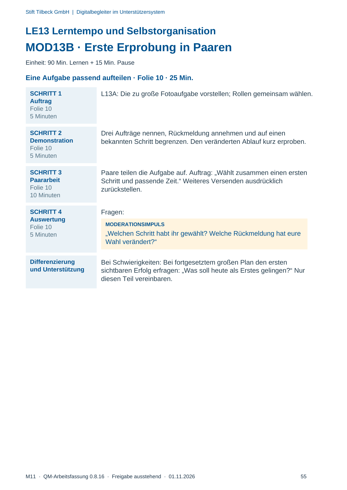
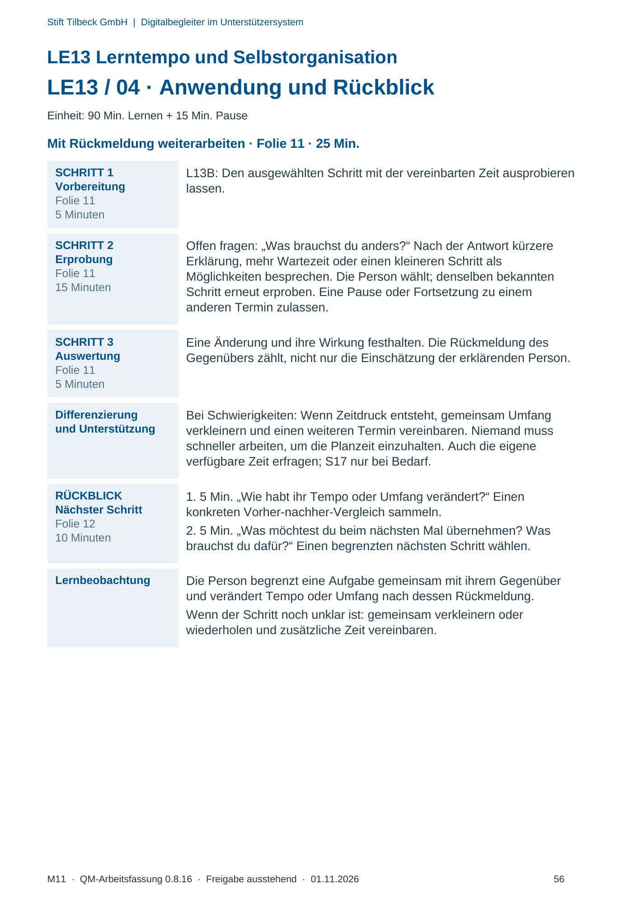

M11 · Originalseite 53, 54, 55, 56
Durchführungshilfe
Gezielte Original-Druckauswahl.
Fragen und Ankreuzfelder werden auf dem Ausdruck bearbeitet. Die Lesefassung speichert keine Antworten.
Lesefassung · Seite 53
Stift Tilbeck GmbH | Digitalbegleiter im Unterstützersystem
LE13 Lerntempo und Selbstorganisation
MOD13A · Vorbereitung und Orientierung
Einheit: 90 Min. Lernen + 15 Min. Pause
Kompetenzziel Lernziel: Ich reagiere auf Rückmeldung und organisiere einen
überschaubaren nächsten Lernschritt.
Vor dem Start L13A/B, Szenen S17/S18 und MK11 bereitlegen. Bekannten Fotoschritt
vorbereiten. Zu große Beispielaufgabe formulieren: Foto aufnehmen,
finden und versenden. Die Kennungsliste ist keine Druckpflicht:
Zusatzfälle nur nach Bedarf, für den Kernablauf genügen die in den
Schritten genannten Materialien.
Material
und Folien
Materialkennungen: L13A, L13B, S17, S18, MK11 · Folien:
LE_13_Digitalbegleiter.pptx
Zeitlicher
Rahmen
Ankommen 10 Min. · Entdecken und Erklären 20 Min. · Lernhandlung
25 Min. · Anwendung 25 Min. · Transfer 10 Min. · Pause 15 Min.
Bestandsbezüge Bestandsbezüge: A12, A13, D07.
Originalseite ansehen

Lesefassung · Seite 54
Stift Tilbeck GmbH | Digitalbegleiter im Unterstützersystem
LE13 Lerntempo und Selbstorganisation
LE13 / 02 · Einstieg und gemeinsame Erarbeitung
Einheit: 90 Min. Lernen + 15 Min. Pause
SCHRITT 1
Einstieg
Folie 2
10 Minuten
An LE12 anknüpfen:
MODERATIONSIMPULS
„Wann war es hilfreich, nur einen Schritt zu erklären?“
Verschiedene Tempi gelten lassen.
SCHRITT 2
Demonstration
Folien 3–4
10 Minuten
Die drei Fotoaufträge kurz hintereinander nennen. Die freiwillige
Partnerperson bittet um nur einen Schritt. Neu vereinbaren: „Wir finden
zuerst ein vorhandenes Foto. Reicht diese Zeit für dich?“
Nachfragen: Wie lässt sich die Aufgabe überschaubarer gestalten?
SCHRITT 3
Erklären
Folien 5–7
5 Minuten
Folie 5 · Tempo abstimmen: „Wir vereinbaren das Tempo gemeinsam.“
Mehr Zeit ist kein Misserfolg; die Person darf eine Pause oder
Wiederholung wünschen.
Folie 6 · Rückmeldung nutzen: „Was war verständlich? Was sollen wir
verändern?“ Rückmeldung soll den Ablauf tatsächlich verändern.
Folie 7 · Die eigene Aufgabe organisieren: „Was übernimmst du heute?
Welches Material brauchst du?“ MK11 als Erinnerung an eine selbst
gewählte Grenze oder Entlastung nutzen.
SCHRITT 4
Auswertung
Folie 8
5 Minuten
Den einen Fotoschritt erneut erklären und abwarten. Fragen:
MODERATIONSIMPULS
„Was ist jetzt anders als bei den drei Aufträgen?“
Differenzierung
und Unterstützung
Bei Schwierigkeiten: Wenn „langsamer“ unklar bleibt, fragen: „Brauchst
du mehr Wartezeit, kürzere Sätze oder nur einen Schritt?“ Eine eigene
Antwort zulassen.
PAUSE
Folie 9
15 Minuten
Pause ohne Arbeitsauftrag.
Originalseite ansehen

Lesefassung · Seite 55
Stift Tilbeck GmbH | Digitalbegleiter im Unterstützersystem
LE13 Lerntempo und Selbstorganisation
MOD13B · Erste Erprobung in Paaren
Einheit: 90 Min. Lernen + 15 Min. Pause
Eine Aufgabe passend aufteilen · Folie 10 · 25 Min.
SCHRITT 1
Auftrag
Folie 10
5 Minuten
L13A: Die zu große Fotoaufgabe vorstellen; Rollen gemeinsam wählen.
SCHRITT 2
Demonstration
Folie 10
5 Minuten
Drei Aufträge nennen, Rückmeldung annehmen und auf einen
bekannten Schritt begrenzen. Den veränderten Ablauf kurz erproben.
SCHRITT 3
Paararbeit
Folie 10
10 Minuten
Paare teilen die Aufgabe auf. Auftrag: „Wählt zusammen einen ersten
Schritt und passende Zeit.“ Weiteres Versenden ausdrücklich
zurückstellen.
SCHRITT 4
Auswertung
Folie 10
5 Minuten
Fragen:
MODERATIONSIMPULS
„Welchen Schritt habt ihr gewählt? Welche Rückmeldung hat eure
Wahl verändert?“
Differenzierung
und Unterstützung
Bei Schwierigkeiten: Bei fortgesetztem großen Plan den ersten
sichtbaren Erfolg erfragen: „Was soll heute als Erstes gelingen?“ Nur
diesen Teil vereinbaren.
Originalseite ansehen

Lesefassung · Seite 56
Stift Tilbeck GmbH | Digitalbegleiter im Unterstützersystem
LE13 Lerntempo und Selbstorganisation
LE13 / 04 · Anwendung und Rückblick
Einheit: 90 Min. Lernen + 15 Min. Pause
Mit Rückmeldung weiterarbeiten · Folie 11 · 25 Min.
SCHRITT 1
Vorbereitung
Folie 11
5 Minuten
L13B: Den ausgewählten Schritt mit der vereinbarten Zeit ausprobieren
lassen.
SCHRITT 2
Erprobung
Folie 11
15 Minuten
Offen fragen: „Was brauchst du anders?“ Nach der Antwort kürzere
Erklärung, mehr Wartezeit oder einen kleineren Schritt als
Möglichkeiten besprechen. Die Person wählt; denselben bekannten
Schritt erneut erproben. Eine Pause oder Fortsetzung zu einem
anderen Termin zulassen.
SCHRITT 3
Auswertung
Folie 11
5 Minuten
Eine Änderung und ihre Wirkung festhalten. Die Rückmeldung des
Gegenübers zählt, nicht nur die Einschätzung der erklärenden Person.
Differenzierung
und Unterstützung
Bei Schwierigkeiten: Wenn Zeitdruck entsteht, gemeinsam Umfang
verkleinern und einen weiteren Termin vereinbaren. Niemand muss
schneller arbeiten, um die Planzeit einzuhalten. Auch die eigene
verfügbare Zeit erfragen; S17 nur bei Bedarf.
RÜCKBLICK
Nächster Schritt
Folie 12
10 Minuten
1. 5 Min. „Wie habt ihr Tempo oder Umfang verändert?“ Einen
konkreten Vorher-nachher-Vergleich sammeln.
2. 5 Min. „Was möchtest du beim nächsten Mal übernehmen? Was
brauchst du dafür?“ Einen begrenzten nächsten Schritt wählen.
Lernbeobachtung Die Person begrenzt eine Aufgabe gemeinsam mit ihrem Gegenüber
und verändert Tempo oder Umfang nach dessen Rückmeldung.
Wenn der Schritt noch unklar ist: gemeinsam verkleinern oder
wiederholen und zusätzliche Zeit vereinbaren.
Originalseite ansehen
